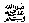
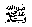
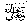

Only a Very Unfortunate Person would not get
forgiveness in Ramadhaan
Kaab Ibn Ujrahsays that Rasulullah said, “Come near to the mimbar” and we came near the mimbar. When He climbed the first step of the mimbar, He said “Aameen”, When He climbed the second step, He said “Aameen”, When He climbed the third step, He said “Aameen” When He came down, We said “O Rasul of Allahtoday
we have heard from you something which we had never heard before.”
Rasulullahsaid, “When I climbed the first step, Jibraeel
appeared before me and said, “Destruction to the person who found the
blessed month of Ramadhaan and let it pass by without gaining
forgiveness,” then, I said ‘Aameen.’ When I climbed the second step, he said, “Destruction to the person
before whom your (i.e. Nabi’s) name is taken and he does not send Durood and Salaam on you (for example by saying, Sallallahu Alayhi Wasallam).” I replied ‘Aameen.’ When I climbed the third step, he said “Destruction on that person
in whose lifetime both his parents or either one of them reaches old
age, and (because of not serving them) he is not allowed to enter Jannah.” I said ‘Aameen.’
said, “Come near to the mimbar” and we came near the mimbar. When He climbed the first step of the mimbar, He said “Aameen”, When He climbed the second step, He said “Aameen”, When He climbed the third step, He said “Aameen” When He came down, We said “O Rasul of Allahtoday
we have heard from you something which we had never heard before.”
Rasulullahsaid, “When I climbed the first step, Jibraeel
appeared before me and said, “Destruction to the person who found the
blessed month of Ramadhaan and let it pass by without gaining
forgiveness,” then, I said ‘Aameen.’ When I climbed the second step, he said, “Destruction to the person
before whom your (i.e. Nabi’s) name is taken and he does not send Durood and Salaam on you (for example by saying, Sallallahu Alayhi Wasallam).” I replied ‘Aameen.’ When I climbed the third step, he said “Destruction on that person
in whose lifetime both his parents or either one of them reaches old
age, and (because of not serving them) he is not allowed to enter Jannah.” I said ‘Aameen.’
Note: In this Hadeeth, Jibraeelmade three curses, upon which Rasulullahsaid “Aameen” every time.
The curses of Jibraeelan angel of such high position, are sure to be accepted. May Allahin His mercy grant us His help and save us from these three
curses.
The first person described above is he who, even in the blessed month
of Ramadhaan, spends the days in sin and does not worry about his
duties, thus he does not get forgiveness. Ramadhaan is the month of
Allah’smercy and if even this month is spent carelessly, how can he expect to
be forgiven for his sins? If he cannot gain Allah’sforgiveness in Ramadhaan, then when will he do so? The way to seek
Allah’spardon for his sins is to complete his duties in Ramadhaan as ordered
by Allahsuch as fasting, reading Taraweeh Salaah
and asking for Allah’sforgiveness for past sins.
The second unfortunate person is he who hears the name of
Rasulullah’sand yet does not send Durood and Salaam on him.
Why should it not be? After all, the favours on us because of
Rasulullahare so great that our writings and our lectures cannot describe. His
favours on us are very great. Therefore, any warning, for the neglect of
sending Durood and Salaam
on Nabiis acceptable.
On the other hand, the reward for reciting Durood is very great. The Hadeeth teaches us that whosoever recites Durood once, Allah ^ sends ten blessings on him and the Malaaikah make dua
for him. All his sins are forgiven, his position is raised and his
reward will be as big as mount Uhud and on the day of Qiyamah, Rasulullah
shall ask Allahto forgive him.
More promises of reward are: obtaining Allah’shappiness, mercy and safety against His anger, safety from the fears
of Qiyamah, seeing your place in Jannah
while still alive on this earth. Besides these, there is the promise of
never being troubled by poverty and of enjoying nearness to
Rasulullahthe promise of help against enemies and the promise of being loved by
others.
The third person described in the Hadeeth
above, is he in whose lifetime one or both of his parents reach old age,
and yet he is unable to gain Jannah by serving them. The Ulama’
have stated that in every permissible act, it is compulsory to obey the
parents’ commands. You should not be disrespectful to them and you
should be humble, even though they may be non muslims. You must neither
raise your voice above theirs, nor call them by their names. When they
have to be
called towards good and stopped from evil, it should be done mercifully
and you should continue to make dua for them even if they refuse to accept.
In a Hadeeth
it is said that, at all times they should be honoured and respected. It
is also related that the best of doors for entering Jannah
is the father. If you wish, look after it and if you wish, destroy
it.
A Sahaabiasked Rasulullah“What are the rights due to parents?” He
replied, “They are your Jannah and your Jahannam! i.e. if they are happy, it leads you to Jannah while their unhappiness leads you to Jahannam.” It is stated in a Hadeeth
that when an obedient child looks with love and affection at his
parents, the reward for that look shall be an accepted Hajj. In another Hadeeth, it is stated that Allahforgives all sins as He pleases except the sin of shirk
(i.e. joining partners with Allah
). However, He gives punishment for disobedience to parents, right in
this world before death.
A Sahaabisaid, “O Rasul of AllahI want to go for Jihad.” Rasulullahasked, “Is your mother alive?” “Yes,” He replied. Rasulullahthen said, “Serve her, Jannah lies under her feet”. Again another Hadeeth
says, “The pleasure of Allahis in pleasing your father, and Allah’sdispleasure is in displeasing your father.”
However, if ones parents were not respected and treated properly and
have passed away, there is still something that their children can do
according to Islam. The Hadeeth
teaches us that, in such cases, one should always make dua
for their forgiveness. By doing so, you will be counted among those who
are obedient. Another Hadeeth
says that the best action a person can do after the death of his father
is to treat his friends in a friendly manner (as the father would have
done).